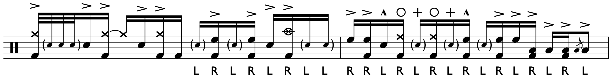
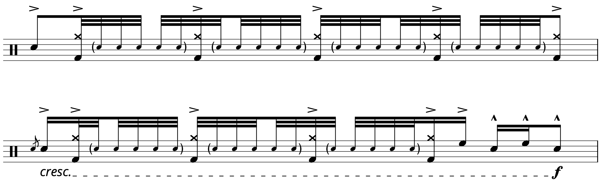

Transcription: "The Price" — David Garibaldi with Tower of Power

About four years ago, David Garibaldi released a collection of sheet music, transcriptions he made himself to show off his playing with Tower of Power. I really like it when drummers take a look at their own playing, it’s the best breakdown you’ll probably get of their work. I have the book myself, and it’s a great look at some very busy, dense/harmonic funk drumming. Garibaldi has some nutty drum parts.
Some time before I got the book, I took a listen through David’s discography with TOP. I noticed a cool little moment from the first album East Bay Grease, where David exchanges 2 bars solos with guitarist Willy Fulton at the of the track “The Price”. East Bay Grease is a really interesting album that sounds nothing like any other TOP record; it came out at the tail end of the James Brown era where funk sounded more like R&B and soul than the very dry and tight Steely Dan-style playing that eventually took over the 70's. While there are a lot of fun moments on East Bay Grease, many of the tunes have a tendency to devolve into drawn out jams. You can tell it was their first shot at a record. The big exception is the closer, “Sparkling in The Sand” — a pensive, forlorn tune driven by Skip Mesquite’s flute.
Anyhoo, there’re are some neat moves on this little solo section from "The Price": a lot of ghost notes, hi hat barks, and nimble tom work. The most exciting fill is perhaps in the 6th line — I included the stickings so you’d know how to play it. The secret is a lefthand paradiddle-diddle starting on beat 4:
Also involving paradiddle-diddles are the 32nd notes that we see at the start of the second page:
Take note of the China cymbal; at 1970, this is the earliest use of a China cymbal I know of. A fun piece of trivia to impress your friends with before they stare at you awkwardly.
"The Price" on Spotify and Apple Music.
Posted on August 23, 2020
Tags: 2020 • Transcriptions • David Garibaldi • Tower of Power